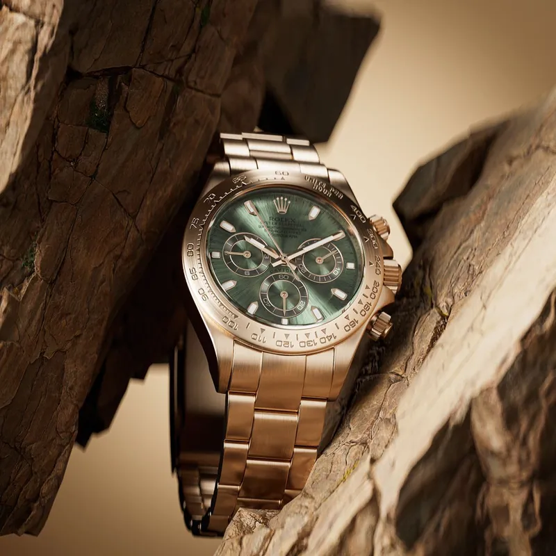
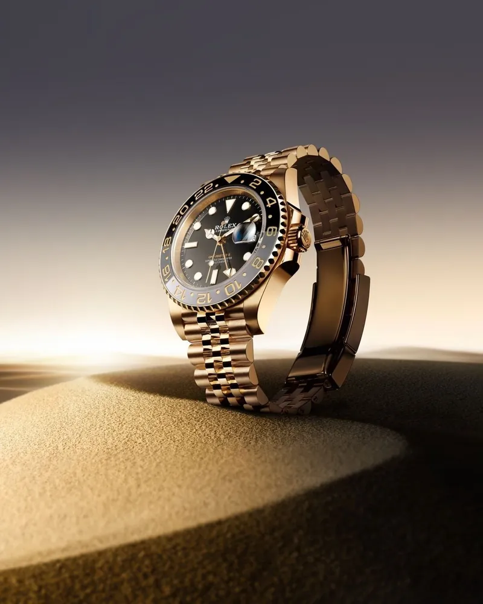
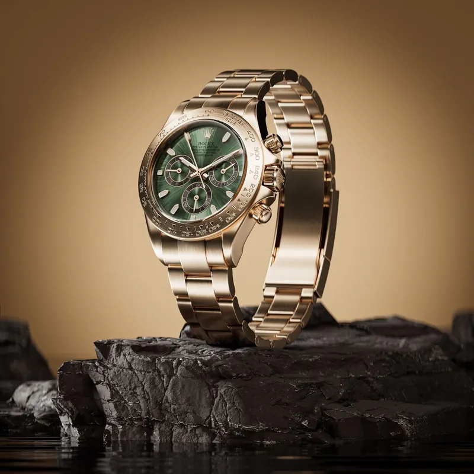
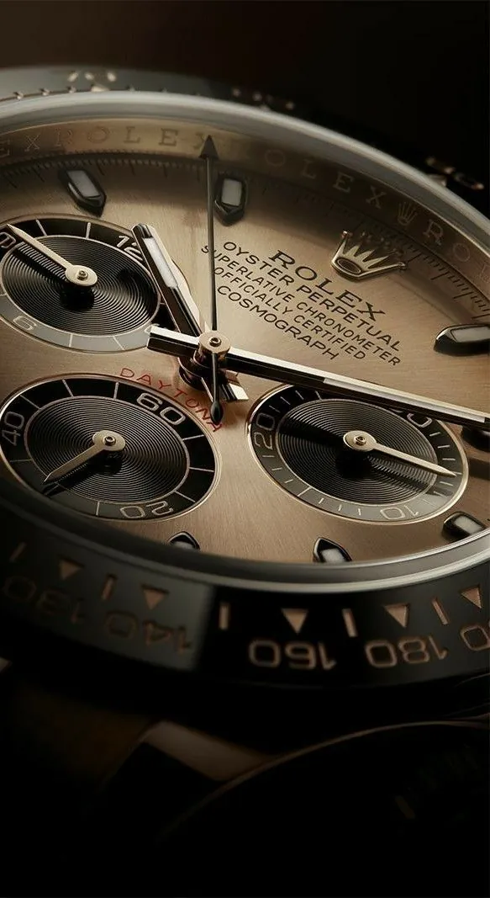

Timeless Precision Since 1926
A Moment For Every
Ambition
Scroll to Explore
Our Heritage
Timeless Precision
Since 1926
For a century, AURELIAN has stood as a benchmark of fine watchmaking — where technical mastery meets enduring elegance. Every movement, every case, every dial is a testament to our unwavering commitment to perfection.
Discover Our StoryOur Collection
Iconic
Timepieces

Ref. AU-1101
Abyss
The quintessential diver's watch. Waterproof to 300 metres, the Abyss has been the reference in deep-water timekeeping since 1964.
Explore →
Ref. AU-2204
Solstice
An emblem of classic watchmaking. Since 1958, the Solstice has defined the aesthetic codes of the classic watch.
Explore →
Ref. AU-3318
Sovereign
The watch of prestige and influence. Cast exclusively in precious metals, the Sovereign has graced the wrists of the world's most influential figures.
Explore →The Art of Making
The Aurelian
Process
In-House Movements
Every AURELIAN movement is designed, developed, and manufactured entirely in-house — a complete integration that ensures uncompromising quality at every stage.
Aurasteel Mastery
AURELIAN uses its own exclusive alloy — Aurasteel — a high-chromium steel developed in our atelier. Highly resistant to corrosion, it achieves a rare sheen when polished.
Precision Certified
Every AURELIAN is tested over fifteen days and certified accurate to -3/+3 seconds per day — a standard that goes beyond common industry requirements.
Aurum Rotor
Our self-winding mechanism with the Aurum rotor, introduced in 1952, transformed our watchmaking. It winds the mainspring continuously through the motion of the wrist.

Years of Excellence
Signature Models
Parts Per Watch
Founded
Time is the one luxury we cannot make more of — so we make every second worth wearing.